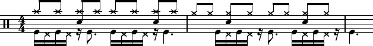
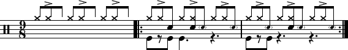

suivant: Importance du “lead” 10/09/19 monter: Cours 2018-2020 précédent: 5B + HH 28/05/
Le 5B peut facilement être interprêté en ternaire, avec GC ou CC, ou CC sur temps et GC sur croche (ou inversement). De la même manière que l'on travaille un thème, on peut jouer sur un débit de “baDa” en accentuant les notes, (voire sur les toms), ou un débit de triolets, ou même de triolet doublé.
Enfin, remplacer une note en fonction de sa durée en s'inspirant, par exemple, de la transposition suivante.
 =  , = , = .
Ce qui fait que la première mesure du 5B se réécrit
=